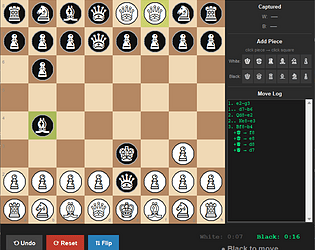

What it is
Chess: Basic Edition is a single-file Tkinter app that puts a digital chess board in front of two people sharing one screen. It sets up the standard starting position and then gets out of the way.
It does not enforce the rules. Any piece can go to any square, so players agree on legality themselves, just like with a wooden set. That also makes it handy for setting up puzzles, replaying positions, or teaching.
Features
Pick up and put down
Click a piece to lift it, then click a square to drop it. Landing on an occupied square captures that piece.
Undo
Steps back through every action, restoring the board, captures, move number, whose turn it is and both clocks.
Flip the board
View the game from Black's side. Rank and file labels flip with it, and clicks still map to the right squares.
Clocks
Each side has a count-up timer. Only the player to move is running, and their clock glows green.
Captured pieces
Everything each side has taken is listed in the sidebar, sorted from queen down to pawn.
Piece bank
Add any piece of either colour to any square, including extra kings and pawns. Good for custom positions.
Move log
A scrolling record of every move, such as 1. e2-e4, with x for captures.
Last-move highlight
The squares a piece left and landed on are tinted so you can see what just happened.
How to play
- Move a piece
- Click it, then click the destination. The turn passes to the other side.
- Capture
- Drop your piece on an opponent's piece. It goes into the captured list.
- Remove a piece
- While holding a piece, click outside the board to knock it off.
- Add a piece
- Click a piece in the "Add Piece" bank, then click a square.
- Undo, Reset, Flip
- Buttons along the bottom. Reset returns to the starting position and zeroes the clocks.
Run it
You need Python 3 with Tkinter, which ships with the standard Python installers on Windows and macOS. There is nothing else to install.
git clone https://github.com/YOUR-USERNAME/YOUR-REPO.git
cd YOUR-REPO
python3 chess.pyOn some Linux distributions Tkinter is a separate package, for example sudo apt install python3-tk on Debian and Ubuntu.
Make it yours
Every colour and size lives in a block of constants at the top of the file, each with a comment. Change SQUARE_SIZE to resize the whole board, or swap the hex values to restyle it.
SQUARE_SIZE = 72
COLOR_LIGHT = "#f0d9b5"
COLOR_DARK = "#b58863"
COLOR_HELD = "#7fc97f"Good to know
There is no check, checkmate, castling or en passant logic, and no computer opponent. The app tracks positions, not rules.
The move log records what was moved and where, so it is a simple log rather than full algebraic notation.